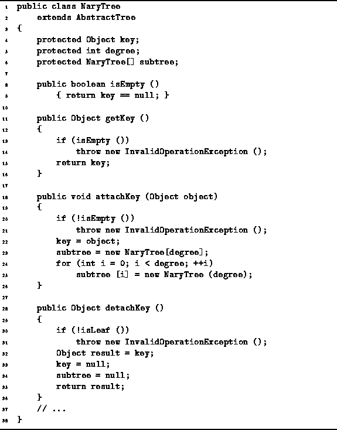

Data Structures and Algorithms
with Object-Oriented Design Patterns in Java
Data Structures and Algorithms
with Object-Oriented Design Patterns in Java
The purpose of the isEmpty method is to determine
whether a given N-ary tree is the empty tree.
The implementation of this method is given in Program  .
In this implementation,
the key field is null if the tree is the empty tree.
Therefore, isEmpty method simply tests the key field.
Clearly, this is a constant time operation.
.
In this implementation,
the key field is null if the tree is the empty tree.
Therefore, isEmpty method simply tests the key field.
Clearly, this is a constant time operation.

Program: NaryTree methods.
 Copyright © 1998 by Bruno R. Preiss, P.Eng. All rights reserved.
Copyright © 1998 by Bruno R. Preiss, P.Eng. All rights reserved.